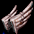
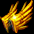
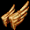

箱品 翼
| [最大CPLv4] [最大HPLv4] 青銅の翼 | ||||
|---|---|---|---|---|
|  | <基本情報> 攻撃力 6~12(1.20秒) 射程距離 400 vs 悪魔系キャラクター - ダメージ +15％ 最大CP +16 最大HP +16 |
|||
| <要求能力値> レベル 29 知識 25 |
<着用可能な職業> 追放天使 ネクロマンサー |
<耐久力減少> - |
<箱品番号> 27 |
|
| <説明> 丈夫だが、毎日磨かなければならない、翼の補強材 |
||||
| [移動速度Lv1] [薬回復Lv1] 隕鉄の翼 | ||||
| <基本情報> 攻撃力 9~18(1.20秒) 射程距離 400 vs 悪魔系キャラクター - ダメージ +25％ 移動速度 +5％ ポーション回復速度 +100％増加 |
||||
| <要求能力値> レベル 48 知識 40 |
<着用可能な職業> 追放天使 ネクロマンサー |
<耐久力減少> - |
<箱品番号> 42 |
|
| <説明> 空から落ちた隕石から採集した鉄で作った補強材 |
||||
| [攻撃速度Lv1] 金の翼 | ||||
|  | <基本情報> 攻撃力 14~31(1.30秒) 射程距離 450 vs 悪魔系キャラクター - ダメージ +50％ 攻撃速度 +20％ |
|||
| <要求能力値> レベル 112 知識 70 カリスマ 85 |
<着用可能な職業> 追放天使 ネクロマンサー |
<耐久力減少> - |
<箱品番号> 50 |
|
| <説明> 黄金で作られた補強材。派手なのは言うまでも無い |
||||
| [健康固定] [力比率上昇Lv1] プラチナの翼 | ||||
| <基本情報> 攻撃力 19~40(1.30秒) 射程距離 500 vs 悪魔系キャラクター - ダメージ +75％ 健康固定 120 力 +2 /レベル 12 |
||||
| <要求能力値> レベル 150 知識 90 カリスマ 115 |
<着用可能な職業> 追放天使 ネクロマンサー |
<耐久力減少> - |
<箱品番号> 71 |
|
| <説明> 白金で作られ､天使の品格を増してくれる翼の補強材 |
||||
| [CPボーナスLv2] [移動速度Lv1] 黄銅の翼DX | ||||
|  | <基本情報> 攻撃力 34~39(1.20秒) 射程距離 400 vs 悪魔系キャラクター - ダメージ +50％ CP獲得ボーナス 4％ 移動速度 +5％ |
|||
| <要求能力値> レベル 187 知識 140 |
<着用可能な職業> 追放天使 ネクロマンサー |
<耐久力減少> 18型 |
<箱品番号> 88 |
|
| <説明> 輝く黄銅が、まるで金を思わせる補強材 |
||||
| [力比率上昇Lv2] 隕鉄の翼LX | ||||
| <基本情報> 攻撃力 38~47(1.20秒) 射程距離 400 vs 悪魔系キャラクター - ダメージ +57％ 力 +1 /レベル 3 |
||||
| <要求能力値> レベル 275 知識 180 |
<着用可能な職業> 追放天使 ネクロマンサー |
<耐久力減少> 26型 |
<箱品番号> 100 |
|
| <説明> 空から落ちた隕石から採集した鉄で作った補強材 |
||||
| [薬回復Lv3] [移動速度Lv2] 金の翼GDX | ||||
| <基本情報> 攻撃力 45~62(1.30秒) 射程距離 450 vs 悪魔系キャラクター - ダメージ +70％ ポーション回復速度 +300％増加 移動速度 +10％ |
||||
| <要求能力値> レベル 317 知識 240 カリスマ 312 |
<着用可能な職業> 追放天使 ネクロマンサー |
<耐久力減少> 36型 |
<箱品番号> 122 |
|
| <説明> 黄金で作られた補強材。派手なのは言うまでも無い |
||||
| [攻撃反射Lv3] [CP変換Lv1] プラチナの翼GDX | ||||
| <基本情報> 攻撃力 50~71(1.30秒) 射程距離 500 vs 悪魔系キャラクター - ダメージ +82％ ダメージ返し 35％ ダメージをCPに転換 4％ |
||||
| <要求能力値> レベル 360 知識 280 カリスマ 387 |
<着用可能な職業> 追放天使 ネクロマンサー |
<耐久力減少> 38型 |
<箱品番号> 131 |
|
| <説明> 白金で作られ､天使の品格を増してくれる翼の補強材 |
||||